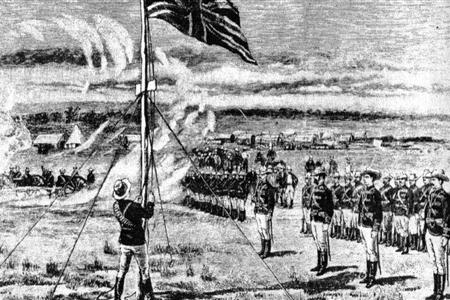
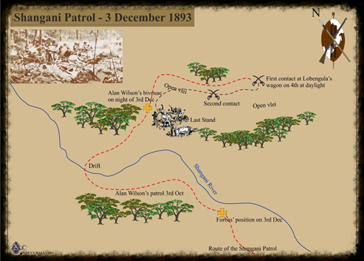
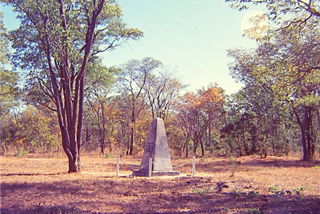

The Pioneers
Birth of a nation: 13 September 1890
In compliance with the Orders of the Day issued by Major Frank Johnson, the Pioneer Column paraded at 1000 hours on Saturday 13 September 1890, dismounted and in full dress, to celebrate their arrival in this new country, and to name the place where they had halted Fort Salisbury, after Lord Salisbury, the Prime Minister of Great Britain. Assembled in front of a roughly-hewn pole from a Msasa tree were A and B Troops of the Pioneer Column; C Troop with two 7-pounder guns at the ready; and B Troop of the BSAP on the left. The site would henceforth be called Cecil Square.
The honour of hoisting the flag was bestowed upon Lt. E.C. Tyndale-Biscoe RN. Also stood by the flagstaff were Lt. Colonel Edward Pennefather, commander of the BSAP, Capt. Sir John Willoughby, second in command of the BSAP, and Lt. Sidney Shepstone, ADC to the commander. The BSAP Chaplain, Canon Francis Balfour gave a prayer of thanks, which was followed by a twenty-one gun salute and a march past by those on parade.
The column had crossed the Shashi River into Lobengula’s territory on the first day of July that year, laagering close to the river at a spot where Fort Tuli would be constructed. The onerous pathfinder responsibilities for ‘cutting the road’ initially rested with B Troop, accompanied by Frederick Courteney Selous and Dr L.S. Jameson. Progress was slow through the unchartered territory; the column’s every move under close scrutiny from Matabele warriors acting under instructions from their king in GuBulawayo. Consequently, the column had to go into defensive laager every night, using the sixteen-horse-power steam engine powered searchlight for added security.

Raising the flag
On 17 August, having a few days earlier crossed the Tokwe River and dynamited their way through what they christened Providential Pass, the column laagered at what became Fort Victoria. As the column ventured away from direct Matabele influence and into the land of the Shona tribes, the atmosphere became more relaxed and Maj. Johnson condoned hunting for fresh meet. On Tuesday 2 September, in bitterly cold and wet conditions, the column arrived at the headwaters of the Umniati River, selecting a suitable site to establish Fort Charter. This new garrison was left in the control of Capt. Maurice Heyman and A Troop of the BSAP.
Night marches were also undertaken as tensions associated with the presence of amaNdebele warriors were left behind. A week later, the column outspanned on the Umfuli River, where a Berthon boat (a double-skinned canvas craft), carted all the way from the Cape, was sailed up and down a pool in the river. On Thursday 11 September, the weary column, having left the railhead in Kimberley almost five months ago, double-spanned all 117 wagons across the Hunyani River, just sixteen miles away from their final destination at Mt Hampden. During a much needed rest at the Makabusi River, Major Johnson scaled a nearby kopje to see how far they were from Mt Hampden. However, it was not the sight of the distant hill that drew Johnson’s attention, but the presence of a good supply of water and open plains of rich red soil in the immediate vicinity. Fetching Rhodes’ proxy, Jameson, to share his discovery with, a decision was made to select the spot on the Makabusi to end Johnson’s contract and to call the site Salisbury, after the 3rd Marquis of Salisbury.
The Shangani Patrol Massacre: 04 December 1893
It is the afternoon of 04 December 1893, and at a place called Pupu, deep in the rain-drenched mopane forests of the Shangani in Matabeleland, thirty three officers and men of the ill-fated patrol sent by Major Forbes to look for the fleeing Lobengula, lay dead, killed in a desperate battle against overwhelming numbers of Ndebele warriors.
Lobengula, the last Matabele king, his lineage of the Zulu Khumalo clan, had torched his royal kraal at Gubulawayo and fled north, away from the advancing combined troops of the British South Africa Company and other Imperial units. Borne away in a wagon, the ailing king was escorted by several thousand warriors under his chief induna, Mjaan.
Dr Leander Starr Jameson, whose impetuous behaviour would six years later contribute to throwing the sub-continent into war, despatched a column under Major Patrick Forbes to capture Lobengula. The expeditionary force including troops from Salisbury, Victoria and men of Raaff’s British Bechuanaland Police, set off on 12 December, taking with them four Maxim machine-guns (each with 2100 rounds of ammunition) and a 7-pounder gun. Two scouts, the American Russell Burnham and Pete Ingram, accompanied the force.

Map showing the route taken by the Shangani Patrol
On 03 December, the column reached the Shangani, where it was discovered that Lobengula had set up a temporary kraal just across the river, guarded by the Ingubo, Inshlati and Isiziba regiments. Major Allan Wilson and twenty officers and men, including scouts Burnham and Ingram, crossed the river, and before bivouacking for the night, Wilson sent Captain Napier back to Forbes to not only report that the Matabele had been found in apparently large numbers, but also to request reinforcements and a Maxim.
Forbes, reluctant to move at night and only intending to strike across the river with the full column the following morning, at midnight despatched Captain Henry Borrow and twenty men to reinforce Wilson. During the night Wilson and his men approached Lobengula’s wagons. One of the troopers, sufficiently conversant in Zulu, was tasked to call out that they had come to take the king back to Gubulawayo. The challenge was met with a fusillade of rifle fire, forcing Wilson and his men to fall back a fair distance. The patrol’s dawn stand-to heralded further sporadic rifle-fire between themselves and Ndebele warriors concealed in the thick mopane bush. Four members of the Bechuanaland Police were wounded and 17 horses shot. The patrol is forced further back to a point which Wilson selects to make a stand, forming a circle of men and horses. They face large numbers of determined Ndebele swarming towards them from the wagons. A large group sweeps around the patrol’s left flank, with the objective of closing their rear and preventing retreat towards the river. Sensing this, Wilson withdraws further, heading back towards where they had spent the previous night. The remaining mounted men form a hollow square around those who had lost their mounts, as the crippled patrol limps in the direction of the river.
The Shangani River in full flood giving some idea of what Wilson and his men faced (Photo thanks Lewis Walter)
Assessing the situation now as being very dangerous, he realises that their chances of survival are virtually nil without the crucial added firepower of a Maxim. He orders Burnham, Ingram and Trooper Gooding on an urgent mission to demand help at any cost from Forbes. The trio only just manages to cross the Shangani, now rapidly swelling into a raging torrent from all the incessant rain. They would not see the patrol alive again.
As Wilson and his men fall back deeper into the bush, judging the river banks to be a little over one hundred metres away, they find the only possible route of escape blocked, as the left and right “horns of the traditional Zulu flanking manoeuvre encircles the small group of desperate men. Finally Wilson calls a halt, and using the remaining horses as a protective laager, he prepares his men to face an impossibly large enemy force surrounding their position. But the day drags on as, in typically cautious fashion, the Ndebele gradually decimate the patrol through intermittent rifle fire and assaults with spears and knobkerries. Popular tradition has it that Wilson and his men sang God Save the Queen before they all finally fell.

The Pupu Allan Wilson Memorial near Lupane (Photo thanks Lewis Walter)
The remains of the Shangani patrol would remain at this spot at the mercy of nature only, the Ndebele warriors having been ordered by their indunas not to disembowel the bodies, as was their normal practice. Several weeks later, Bulawayo trader James Dawson visited the site and buried what he could. Subsequently, the remains were exhumed and reburied in Ft Victoria, the home of many of the patrol including Wilson. In 1904 the remains of the men of the Shangani patrol were moved once again, this time to their final resting place in the imposing granite and bronze memorial adjacent to Cecil Rhodes’ grave in World’s View, Matopos.
Captain Charles Newman, in his book Matabeleland and How We Got It, written about the Matabele War in Bulawayo in 1894, said that
“Major Wilson and his party died as soldiers should do, in the cause of progress and civilisation; and neither relatives, friends, nor their countrymen could wish them a nobler end.”
He lists these soldiers: Major Allan Wilson; Captains Fitzgerald, Judd, Greenfield, Kirton and Brown; Lieutenants Hughes and Hofmeyr; Troop Sgt Major Harding; Sergeants Browne, Bradburn and Berkeley; Corporals Colquhoun and Kinloch; Troopers Welby, Robertson, Robertson-Hay, Hellett, Dillon, Money, Dervis, de Vos, Brock, Britain, Bath, Morris, Tuck, Thompson, Abbott, McKenzie, Micklejohn, T. Watson and G. Watson.